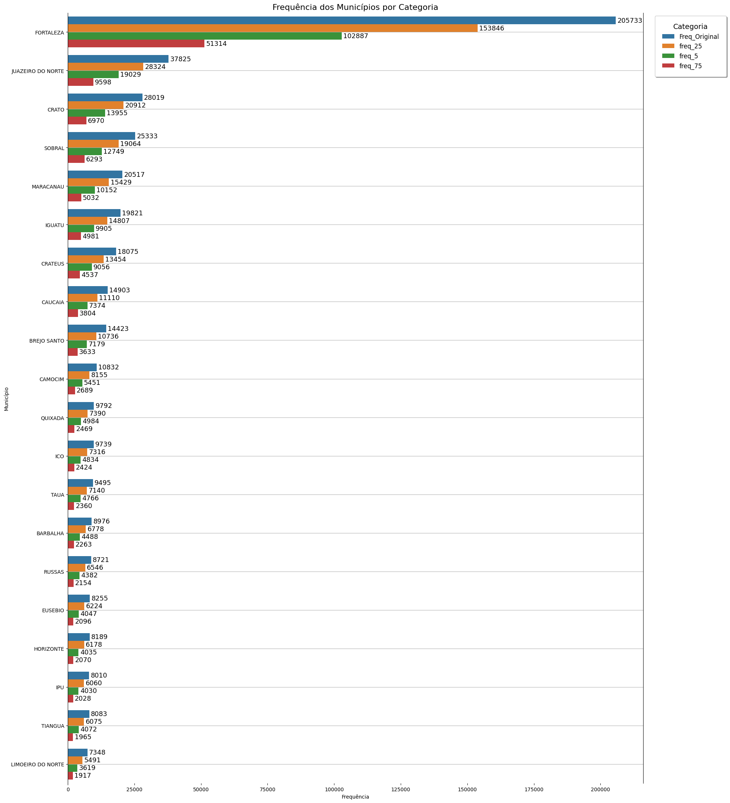
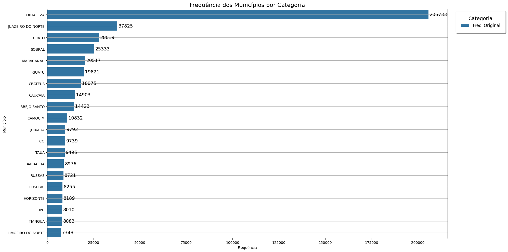

# Importando dados para realização do trabalho
import os
import glob
import random
import polars as pl
import seaborn as sea
import matplotlib.pyplot as pltTrabalho 2 - Supressão
Objetivo
O trabalho consiste em implementar um algoritmo que realiza a supress ̃ao de parte dos valores de municípios de um conjunto de dados e avalia o impacto em um estudo de frequˆencia com base neste atributo.
Voce dever ́a implementar um algoritmo que inicialmente suprime aleatoriamente os valores do atributo MunicipioCaso com percentual de supressão em 3 faixas diferentes, 25%, 50% e 75%. Para cada faixa voce dever ́a gravar um dataset resultado com o nome “dadoscovid-ce trab02 X.csv” onde “X” ́e o valor do percentual de supressão no dataset.
# Lendo o arquivo via polars
data = pl.read_csv(source='dataset\\dados_covid-ce_trab02.csv')subset = data.select([
pl.col(col).is_null().alias(col) for col in data.columns
]).sum()\
.transpose(
include_header=True
)\
.filter(pl.col('column_0')>0)
subset.head(3)
shape: (3, 2)
| column | column_0 |
|---|---|
| str | u32 |
| "idRedcap" | 855803 |
| "idEsus" | 180037 |
| "idSivep" | 843457 |
print(f'Quantidade de nulos totais : {subset['column_0'].sum()}')
print(f'Quantidade de colunas com valores {subset['column'].count()} de {data.shape[1]}')
print(f'Colunas com valores nulos :\n * {'\n * '.join(subset['column'].to_numpy().tolist())}')Quantidade de nulos totais : 32743702
Quantidade de colunas com valores 53 de 63
Colunas com valores nulos :
* idRedcap
* idEsus
* idSivep
* classificacaoEstadoRedcap
* classificacaoEstadoEsus
* classificacaoFinalEsus
* evolucaoCasoEsus
* cboEsus
* profissionalSaudeEsus
* paisCaso
* bairroCasoGeocoder
* idadeCaso
* faixaEtaria
* dataNascimento
* dataNotificacao
* dataSolicitacaoExame
* dataColetaExame
* dataResultadoExame
* resultadoFinalExame
* laboratorioExame
* classificacaoEstadoSivep
* dataInternacaoSivep
* dataEntradaUTISivep
* dataSaidaUTISivep
* evolucaoCasoSivep
* dataEvolucaoCasoSivep
* comorbidadePuerperaSivep
* comorbidadeCardiovascularSivep
* comorbidadeHematologiaSivep
* comorbidadeSindromeDownSivep
* comorbidadeHepaticaSivep
* comorbidadeAsmaSivep
* comorbidadeDiabetesSivep
* comorbidadeNeurologiaSivep
* comorbidadePneumopatiaSivep
* comorbidadeImunodeficienciaSivep
* comorbidadeRenalSivep
* comorbidadeObesidadeSivep
* comorbidadeHiv
* comorbidadeNeoplasias
* tipoTesteExame
* requisicaoGal
* dataNotificacaoObito
* cnesNotificacaoEsus
* municipioNotificacaoEsus
* tipoObitoMaterno
* classificacaoFinalCasoSivep
* gestante
* tipoTesteEsus
* dataObito
* classificacaoObito
* localObito
* tipoLocalObito
Criando a funções de supressao e para salvar os resultados
def fn_supressao(subset, porcentagem=0.25):
TAM = subset.shape[0]
print("_"*100)
print("FN_SUPRESSAO")
print(f"Supressão para coluna de {subset.name} com {porcentagem*100}% ({int(TAM*porcentagem)})")
print("* Escolhendo 25% de instancias aleatoriamente para supressão dos respectivos valores")
list_ = random.sample(range(TAM), k=int(TAM * porcentagem))
print(f"* Instancias escolhidas\n + ex: {', '.join(map(str, list_[:5]))}....")
array_ = subset.to_numpy()
print('* Supressão dos valores')
array_[list_] = ""
return pl.Series(name='municipioCaso', values=array_.tolist(), dtype=str)def fn_supressao_to_csv(data:pl.DataFrame, porcentagens=[0.25, 0.50, 0.75]):
series = data['municipioCaso']
for por in porcentagens:
# Modificando coluna
data = data.with_columns(
[fn_supressao(series, porcentagem=por)]
)
string = str(por).replace('.', '_')
print('* Salvando resultados')
print(f' =>dataset_result\\Salvando dados_covid-ce_trab02_{string}.csv')
os.makedirs(name='dataset_result', exist_ok=True)
data.select(pl.col('municipioCaso')).write_csv(f'dataset_result\\dados_covid-ce_trab02_{string}.csv')
print('')
print("Processo Supressão finalizado!")fn_supressao_to_csv(data)____________________________________________________________________________________________________
FN_SUPRESSAO
Supressão para coluna de municipioCaso com 25.0% (213950)
* Escolhendo 25% de instancias aleatoriamente para supressão dos respectivos valores
* Instancias escolhidas
+ ex: 170600, 379106, 314168, 158315, 74268....
* Supressão dos valores
* Salvando resultados
=>dataset_result\Salvando dados_covid-ce_trab02_0_25.csv
____________________________________________________________________________________________________
FN_SUPRESSAO
Supressão para coluna de municipioCaso com 50.0% (427901)
* Escolhendo 25% de instancias aleatoriamente para supressão dos respectivos valores
* Instancias escolhidas
+ ex: 256393, 66563, 365035, 783394, 656553....
* Supressão dos valores
* Salvando resultados
=>dataset_result\Salvando dados_covid-ce_trab02_0_5.csv
____________________________________________________________________________________________________
FN_SUPRESSAO
Supressão para coluna de municipioCaso com 75.0% (641852)
* Escolhendo 25% de instancias aleatoriamente para supressão dos respectivos valores
* Instancias escolhidas
+ ex: 267543, 522067, 842617, 648115, 640686....
* Supressão dos valores
* Salvando resultados
=>dataset_result\Salvando dados_covid-ce_trab02_0_75.csv
Processo Supressão finalizado!
No passo seguinte, seu algoritmo vai calcular a frequencia dos valores do atributo MunicipioCaso para cada um dos dataset, o original sem supressão e os outros tres com a supressão realizada. Gere um arquivo com as frequencias encontradas e grave este arquivo com o nome de “frequencias trab2.csv”.
print("Gerando Frequência dos municípios")Gerando Frequência dos municípiosprint('Gerando frequencia dos resultados para :')
datas_sup = []
for path_name in glob.glob('dataset_result\\*.csv'):
print(f' * {path_name}')
character = path_name.split('_')[-1].split('.')[0]
data_sup = pl.read_csv(path_name)
data_sup = data_sup\
.group_by(['municipioCaso'])\
.len(name=f'freq_{character}')\
.sort(by=f'freq_{character}', descending=True)
#
datas_sup.append( data_sup )Gerando frequencia dos resultados para :
* dataset_result\dados_covid-ce_trab02_0_25.csv
* dataset_result\dados_covid-ce_trab02_0_5.csv
* dataset_result\dados_covid-ce_trab02_0_75.csvFazendo a junção de tudo
print("Junção das frequencias dos resultados")
datas_sub_final = datas_sup[0]
for e, df in enumerate(datas_sup[1:]):
datas_sub_final = datas_sub_final.join(df, on='municipioCaso', how='full',suffix=f"_dup_{e}") # outer = une tudo
datas_sub_final = datas_sub_final.select([
'municipioCaso', 'freq_25', 'freq_5', 'freq_75'
])Junção das frequencias dos resultadosdatas_sub_final.head(3)
shape: (3, 4)
| municipioCaso | freq_25 | freq_5 | freq_75 |
|---|---|---|---|
| str | u32 | u32 | u32 |
| "" | 213950 | 427901 | 641852 |
| "FORTALEZA" | 153846 | 102887 | 51314 |
| "JUAZEIRO DO NORTE" | 28324 | 19029 | 9598 |
Fazendo o mesmo processo de frequencia para o dados normal
data = pl.read_csv('dataset\\dados_covid-ce_trab02.csv')
subset = data\
.group_by(['municipioCaso'])\
.len(name='Freq_Original')\
.sort(by='Freq_Original', descending=True)Unindo com o dataset normal
dataset_final = subset.join(
datas_sub_final,
on='municipioCaso', how='full',
).select(['municipioCaso', 'Freq_Original', 'freq_25', 'freq_5', 'freq_75'])Verificando o resultado
dataset_final.head(2)
shape: (2, 5)
| municipioCaso | Freq_Original | freq_25 | freq_5 | freq_75 |
|---|---|---|---|---|
| str | u32 | u32 | u32 | u32 |
| null | null | 213950 | 427901 | 641852 |
| "FORTALEZA" | 205733 | 153846 | 102887 | 51314 |
Salvando o resulto
os.makedirs(name='dataset_result_final', exist_ok=True)
dataset_final.write_csv('dataset_result_final\\dataset_final.csv')dataset_final = dataset_final.drop_nulls()Visualizacao
subset_vis = dataset_final.head(20)subset_mel_vis = subset_vis.unpivot(
on=["Freq_Original", "freq_25", "freq_5", 'freq_75'],
index="municipioCaso",
variable_name="Categoria",
value_name="Frequencia"
)print("Gerando o grafico")Gerando o graficoplt.figure(figsize=(20, 22))
ax = sea.barplot(
subset_mel_vis, y='municipioCaso', x='Frequencia', hue='Categoria'
)
plt.gca().spines[['top','bottom']].set_visible(False)
plt.gca().grid(axis='y')
for container in ax.containers:
ax.bar_label(
container,
fmt='%.0f',
label_type='edge',
padding=3,
fontsize=13,
color='black'
)
leg = ax.legend(
title='Categoria',
title_fontsize=14,
fontsize=12,
loc='upper right',
bbox_to_anchor=(1.15, 1),
frameon=True,
shadow=True,
borderpad=1.2
)
plt.title('Frequência dos Municípios por Categoria', fontsize=16)
plt.xlabel('Frequência')
plt.ylabel('Município')
plt.tight_layout()
plt.savefig(fname='plots\\plot_k20_total.pdf')
for freq in ["Freq_Original", "freq_25", "freq_5", "freq_75"]:
plt.figure(figsize=(20, 10))
sub = subset_mel_vis.filter(pl.col('Categoria')==freq)
ax = sea.barplot(
sub, y='municipioCaso', x='Frequencia', hue='Categoria'
)
plt.gca().spines[['top','bottom']].set_visible(False)
plt.gca().grid(axis='y')
for container in ax.containers:
ax.bar_label(
container,
fmt='%.0f',
label_type='edge',
padding=3,
fontsize=13,
color='black'
)
leg = ax.legend(
title='Categoria',
title_fontsize=14,
fontsize=12,
loc='upper right',
bbox_to_anchor=(1.15, 1),
frameon=True,
shadow=True,
borderpad=1.2
)
plt.title('Frequência dos Municípios por Categoria', fontsize=16)
plt.xlabel('Frequência')
plt.ylabel('Município')
plt.tight_layout()
plt.savefig(fname=f'plots\\plot_k20_tota_{freq}.pdf')

print('Salvo na pasta plots , finalizado.')Salvo na pasta plots , finalizado.